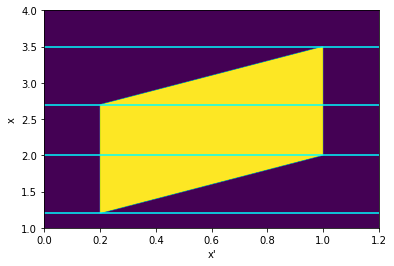
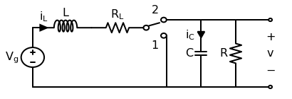

Posted in 2020
Summing Uniform Distributions
- 2020-09-25
The distribution of the sum of N uniformly distributed variables came up in a recent RdTools PR. The approach taken there was to just sample each distribution and sum the samples, but I wondered how it could be done analytically. This notebook is inspired by this StackExchange post and extends the derivation from just summing two uniform distributions on \([0,1]\) to two distributions with arbitrary bounds.
Given two independent random variables \(A\) and \(B\) with probability densities \(f_a(x)\) and \(f_b(x)\), the probability density \(f_c(x)\) of their sum \(A + B = C\) is given by the convolution \(f_a * f_b\):
Modeling copper losses in a boost converter
- 2020-06-14
This post will work through a simple power electronics problem. An ideal boost converter uses only lossless components (L, C) and no lossy components (R). However, real inductors will have nonzero resistance in its wiring. This copper loss has a strong effect on the converter’s ability to boost voltage. This follows the approach of Chapter 3 of Fundamentals of Power Electronics, 2e by Erickson and Maksimović.
First let’s draw the boost converter we’ll be modeling. Note that in this context, the precise switching circuit (PWM driver, MOSFET, etc) is irrelevant and represented by an ideal switch.
PVWatts and PVUSA
- 2020-02-01
I read a paper recently that turned on a lightbulb about why the PVUSA/ASTM E2848-13 equation is defined the way it is. To quote the paper [1]:
The concept of modeling power by modeling current and voltage separately (other than IV-curve modeling, of course) is obvious in hindsight but had never occurred to me before… so let’s have some fun and try it out!